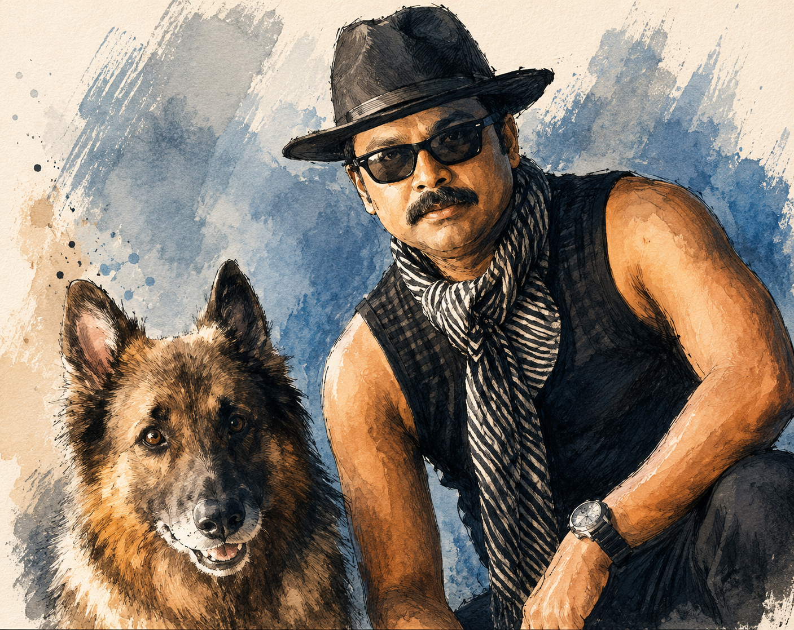

What is an
Agent?
Not the AI kind yet. The Malayalam-cinema kind.
Before we touch a single API, let's agree on what the word "agent" even means. Hollywood and Kerala got there decades before OpenAI did.
The case file
CID Moosa, self-appointed secret agent with the Kerala Police (unofficially)
Whatever case just walked through the door
A bag of gadgets, a sidekick, and unshakeable confidence
Look at the situation, pick a gadget, try it, adjust, repeat
The agent himself.

Given a task.
Given tools.
Moosa never solves a case by "just knowing" the answer. He's handed a problem, handed a toolkit, and left to figure out the rest. Badly, hilariously, but the loop is real.
Now swap the spy
for software.
Strip away the comic timing and the mundu, and CID Moosa is running the exact loop we want an AI system to run: task in, tools available, judgement in between, action out, repeated until done.
What actually
makes it an agent?
A single prompt and response is not an agent. There's no loop, no tools, no memory of what just happened. An agent needs all four pieces below, working together.
The four ingredients
A task stated once, carried through every step
Functions it can call: search, a calculator, an API, another agent
What's happened so far in this run, carried forward
Observe, decide, act, check. Repeated with some autonomy until the goal is met or it gets stuck
In. Reasoning.
Out.
Zoom into the "decides which tool fits" step and this is what it looks like. The model sits in the middle. Three things sit around it, ready when needed.
A chatbot answers.
An agent works.
This is the line we'll keep coming back to all day. It decides whether something belongs in "prompt engineering" or in "agentic AI."
Chatbot
One prompt in, one completion out. No tools, no loop, no memory beyond the conversation. It answers. It doesn't act.
Agent
Given a goal, it plans its own steps, calls tools, checks results, and loops until done, or hands off to a specialist when it's out of its depth.
The loop is simple.
The landscape isn't.
Every framework you've heard of is really this same loop, dressed differently. Next: a fast tour of who's building what.
← Back to startChapter 02: Agentic Frameworks →